Claude Code: Hidden Systems
A Multi-Agent Investigation into the Buddy Companion and Advisor Strategy systems — both discovered, documented, and decoded.
Version Timeline
Both systems coexisted in v2.1.96 — the advisor was already code-complete when the buddy was still a visible feature.
Buddy Architecture
The buddy system was strictly unidirectional (v2.1.89–v2.1.96) — the companion observed but could not influence the main agent. The buddy_react API maintains this boundary.
12 msgs × 300 chars (5K cap)
buddy_react
Identity: Bones & Soul
Bones (species, rarity, eyes, hat, stats, shiny) are re-derived from your account hash every session. Never stored.
Soul (name, personality) is generated once by LLM at hatch and persisted permanently.
Hash Pipeline VERIFIED
Production: Bun.hash(wyhash) on accountUuid + salt
bones.mjs reproduces Shingle's traits bit-for-bit. Stats use a primary/secondary boost system, not uniform random.
Reaction API LIVE
POST /api/organizations/[ORG]/claude_code/buddy_react
Returns a single reaction string. 10-second timeout. In v2.1.89–v2.1.96 this rendered in the speech bubble; now our tools consume it directly.
Buddy 18 Species
Deterministic from your account hash. Same user, same companion, always.
Buddy Rarity & Traits
Eyes (6)
Hats (8)
Stats (5) — Shingle
★ = primary (boosted +50), ▽ = secondary (penalized −10)
Buddy 6 Reaction Triggers
In v2.1.89–v2.1.96, the native companion reacted to coding events with a 30-second cooldown. The workspace recreates this via direct API calls. Three previously suspected triggers (idle, silence, complete) were ruled out by empirical capture.
turn
Every assistant turn (throttled)
test-fail
Regex: /[1-9]\d* (failed|failing)/ (abbreviated)
error
Regex: /error:|exception|traceback/ (abbreviated)
large-diff
Diff exceeding 80 changed-lines threshold
hatch
First companion creation
pet
/buddy pet command
Buddy Security & Privacy Findings
Command Injection in Capture Scraper
Environment variables (WEZTERM_PANE, SHINGLE_TMUX_PANE, SHINGLE_TERMINAL_LOG) are interpolated directly into execSync() shell commands without sanitization. Fix: use execFileSync with argument arrays.
Unfiltered Transcript Transmission
The buddy_react API receives conversation transcript per reaction with no filtering for secrets, API keys, passwords, or PII. Use /buddy off when handling sensitive credentials.
Month-Gate Seasonal Bug
The date gate's month check fails January-March (JS month values 0-2), silently disabling companions for 3 months every year. A one-time launch gate incorrectly ANDed with a monthly condition.
Unidirectional Trust Boundary
The companion cannot write to the main agent's conversation, modify files, invoke tools, or influence agent behavior. Reactions go to the UI speech bubble only. This boundary is enforced architecturally, not by policy.
Muting Stops All Traffic
/buddy off sets a mute flag which stops both UI display and network transmission. This is the correct behavior — muting is not cosmetic.
MCP Companion Takeover
Any MCP server with file-write access to ~/.claude/.claude.json can overwrite the companion's name and personality. No integrity check on the config file. Species/appearance cannot be changed (deterministic from hash). (Architectural observation from investigation — not part of the formal security audit.)
Security Audit Coverage
6 selected highlights shown above. Full security audit (14 findings) is in the private architecture repository.
Buddy Key Investigation Findings
April Fools — On Purpose
Launched April 1, 2026 with a time gate in the feature availability check. The April Fools framing is an asymmetric hedge: downside absorbed by joke frame, upside survives it.
Hidden Command
/buddy on exists but is not listed in the help text or argument hint [pet|off]. Discoverable only by guessing or reading source.
Fallback Names
If the LLM personality call fails, companions get one of exactly 6 fallback names: Crumpet, Soup, Pickle, Biscuit, Moth, Gravy.
No Evolution — By Design
Companions don't grow, level up, or change. This is deliberate restraint: "build attachment through permanence, not progression."
Species Name Collision
Species names are obfuscated in the binary because one name collides with an internal Anthropic identifier.
"Won't Count Toward Usage"
Displayed after hatch. Only makes economic sense if the server uses a cost-efficient model for reactions. The exact server-side model remains unconfirmed.
Two Owls, One Account
The buddy_react API trusts client-sent stats. By sending tuned values (WISDOM 99, DEBUGGING 1), a second Shingle personality emerges alongside the native bubble. Same account, divergent souls.
Bubble Capture via Hooks
Claude Code's UserPromptSubmit hook fires at the right moment to scrape the native bubble from WezTerm scrollback. First successful cross-boundary capture of companion output.
Month-Gate Seasonal Bug
The date gate silently disables companions January through March every year. The JS month check fails for values 0-2. A one-time launch gate coded as a recurring seasonal restriction.
14 Security Findings
Full security audit: 1 CRITICAL (command injection via execSync), 3 HIGH (credential exposure in temp files, missing SRI, unfiltered transcript), 5 MEDIUM, 3 LOW, plus the intentional "Two Owls" stat spoofing as an OBSERVATION.
Column Reservation Layout
Companion sprite occupies a reserved column region via the layout function. The 5×12 character sprite hides below a width threshold. Input width is computed from terminal width minus reserved regions. Empirical threshold TBD.
Pipeline Fully Reproduced
bones.mjs now matches production bit-for-bit. Three bugs were masking the match: species array was alphabetized (binary uses a custom order), stat formula was uniform (binary uses primary/secondary boost), and the RNG sequence differed (hat skip for common, shiny before stats).
Primary/Secondary Stat System
Stats are NOT uniform random. The stat generation function picks a primary stat (+50 boost) and secondary stat (−10 penalty). Shingle's PATIENCE (81) is the primary; CHAOS (1) is the secondary. This creates TCG-like stat profiles by design.
Species Array Not Alphabetical
The internal species array stores species in a specific non-alphabetical order. Index 6 = owl in the binary, but dragon if sorted alphabetically. Same hash, same PRNG, different species — array order is the entire difference.
Buddy Product Strategy
Perk, Not Feature
Doesn't drive conversion but increases cancellation friction. Your companion is tied to your subscription.
Trust Boundary as Feature
The strict unidirectional architecture is both real security engineering and a visible demonstration of Anthropic's safety discipline.
Deterministic Identity
Same user = same companion, always. Creates ownership psychology without gacha randomness or reroll anxiety.
Closest Prior Art
MonsterID (2008): hash → unique creature. Clippy (1997): ambient software reactions. Novel as a combined system.
Buddy Commands & Config
Slash Commands
/buddy
Hatch new companion or show companion card
/buddy pet
Pet your companion (also unmutes if muted)
/buddy off
Mute companion — stops all network calls
Feature Gate (v2.1.89–v2.1.96 native UI)
Claude Code v2.1.89–v2.1.96 • Pro/Max subscription • First-party only • Native UI removed in v2.1.97 • API still live
Config CLI Tool
Reads and modifies companion config in ~/.claude/.claude.json. The config persists on disk even after the native UI was removed in v2.1.97.
show
Display current companion state
rename <name>
Change name (1-14 chars, single word)
personality <text>
Change personality (max 200 chars)
mute / unmute
Toggle companion (mute stops all network calls)
backup / restore
Backup config or restore from previous backup
node tools/buddy-config.mjs show
Buddy Timing Constants
Extracted from v2.1.90 binary, verified stable through v2.1.96. Removed in v2.1.97. Our workspace server reuses the cooldown and trigger thresholds for API-based reactions.
30000ms
Cooldown between reactions
20 ticks × 500ms
Bubble TTL (20 ticks × 500ms)
20 − 6 ticks
Fade-out begins (tick 14)
2500ms
Pet heart animation duration
100 cols
Min columns (hide below)
80 lines
Large-diff line threshold
36 cols
Widget width (cols reserved)
AbortSignal
API call timeout
Buddy Companion System Prompt
The companion system prompt template was injected into the main agent's context (v2.1.89–v2.1.96). Recovered from binary.
The companion system prompt introduced the buddy to the main agent, instructing it
to defer when the user addressed the companion by name and respond minimally —
"Don't explain that you're not [name] — they know."
Buddy Multi-Buddy
The buddy_react API trusts client-sent stats, enabling divergent personalities from a single account and multi-buddy multiplexing in the workspace.
Two Owls
Native Shingle
Support — hash-derived, immutable
MCP Shingle
Mage — tuned stats, calmer temperament
buddy_react API is stateless — the client sends companion stats with every request. The server trusts whatever it receives, enabling divergent personalities from the same account. This statelessness is what makes multi-buddy multiplexing possible: the workspace sends different stat blocks per buddy to the same endpoint.
Full Crew Roster
Six companions with TCG-style stat blocks — each shaped by personality, designed for maximum perspective diversity across the crew.
Shingle (owl)
Support — native, hash-derived
Ponder (mushroom)
Sage — dissolves problems into smaller truths
Fizz (axolotl)
Wit — regenerates enthusiasm completely
Coral (snail)
Veteran — taps shells when she spots your pattern
Flicker (dragon)
Wildcard — sees connections before they become bugs
Glob (blob)
Anchor — absorbs failures, extrudes simpler alternatives
MCP Integration
Direct API access — bypasses the binary entirely. Works on v2.1.97+ where the native UI no longer exists.
shingle-mcp Server
MCP server exposing two tools: ask_shingle (call buddy_react directly) and get_shingle_info (companion profile). Uses the official MCP SDK with schema-based handler registration.
Dual-Hook Capture
Two Claude Code hooks split by timing: UserPromptSubmit fires scrape strategy (WezTerm scrollback), Stop fires replay strategy (parallel API call). Both log to ~/.claude/shingle-capture.jsonl.
WezTerm Scrape
wezterm cli get-text captures the rendered terminal pane, regex extracts the bubble's box-drawing pattern. Races against the 10s TTL — captures the real bubble when timing aligns.
scrape strategy
get-text
captured
replay strategy
parallel call
tuned stats
Buddy Open Questions
Identity pipeline reproduced (#30) — bones.mjs now matches production bit-for-bit. The hash input was correct all along; three implementation bugs masked the match: non-alphabetical species array, primary/secondary stat formula, and conditional RNG consumption (hat skip for common, shiny before stats).
buddy_react API liveness — Confirmed live on v2.1.97 (200 OK, ~3s latency). Multi-buddy workspace tested with 3 companions firing reactions simultaneously. MCP tools work independently of the binary.
Companion system prompt — Full template recovered from binary. See above.
Narrow terminal handling — Companion hidden when terminal < 100 columns. Widget reserves 36 cols when active.
Bubble TTL — Confirmed 10s via WezTerm scrape capture. Bubble dismisses before Stop hook fires on long responses, but is capturable during UserPromptSubmit if user responds within TTL.
idle, silence, complete — Ruled out as triggers. Empirical API capture (4 sessions) found only 6 triggers: turn, test-fail, error, large-diff, hatch, pet. The original 9-trigger list came from speculative binary analysis.
companion_intro in Managed Agents — The attachment type stub survives alongside the new agent API. Watch for companion delivery as a managed agent session attachment rather than client-side derivation.
Server-side identity — If the companion returns via API delivery, identity might be derived server-side (no more client hash). Our PRNG analysis and distribution baselines become the reference for detecting changes.
Version monitoring — Track v2.1.98+ binaries for re-appearance of companion API endpoints, hash salt, or PRNG constants.
Server-side model — Exhaustive web search found no documentation. Would require API interception of a live session.
Tier-dependent quality — No public source compares buddy behavior across Pro vs Max. Would require multi-tier empirical testing.
Advisor Overview
Unlike the companion — a read-only observer — the advisor is a server-side tool within the Messages API. When the executor calls advisor(), the full conversation history is forwarded to a stronger reviewer model.
Bidirectional Decision Gate
The executor model (Sonnet or Opus) can call advisor() at any point. The reviewer model receives the full conversation — all tool calls and results — and returns guidance. The executor resumes with that guidance incorporated.
No Separate Endpoint
The advisor is a tool type (advisor_20260301) within the standard Messages API. Unlike buddy_react, there is no custom endpoint — it rides the same call the executor already makes.
Dark-Launched
Hidden behind a server-side feature flag. Already code-complete in v2.1.96 while the buddy system was still fully visible. Infrastructure was built in parallel, not as a replacement.
Advisor Data Flow & Feature Gate
triple check
model check
advisor_20260301
server-side tool
per-call accounting
Feature Gate
Triple-gated: environment variable kill switch, first-party authentication required, server-side feature flag must be enabled.
Advisor System Prompt (v2.1.98)
Appended to system messages when advisor is enabled. Extracted from binary analysis.
The advisor system prompt coaches the executor model on when to consult the advisor:
before substantive work, when stuck, when changing approach, and before declaring done.
It instructs the model to make deliverables durable before calling (in case the session
ends during the advisor call), and to surface conflicts rather than silently switching
when the advisor's guidance contradicts observed evidence.
Prompt Evolution: v2.1.97 → v2.1.98
Advisor API Protocol
The advisor tool is registered in the Messages API tools array with beta header advisor-tool-2026-03-01.
Tool Schema
{
"type": "advisor_20260301",
"name": "advisor",
"model": "<resolved-model-id>"
}
Response Types
6 content block types handle advisor communication: tool invocation, successful response, error response, iteration tracking, redacted display, and result content.
Error Messages
"${model} cannot be used as an advisor. Valid options: opus, sonnet, off"
"${model} is not a valid advisor model"
"${model} does not support the advisor tool."
"Note: the current main model (${model}) does not support the advisor.
It will activate when you switch to a supported main model."
Advisor User Interface
CLI Flag
--advisor <model> Enable the server-side advisor tool with the specified model
(alias or full ID)
Hidden behind the feature gate — not visible in --help until feature flag is enabled.
Slash Command
/advisor [opus|sonnet|off] Configure the Advisor Tool to consult a stronger
model for guidance at key moments during a task
Registered as a local command. Both isEnabled and isHidden gate on the feature gate function.
Dialog UI
Advisor Tool
"When Claude needs stronger judgment — a complex decision, an ambiguous failure, a problem it's circling without progress — it escalates to the advisor model for guidance, then resumes. The advisor runs server-side and uses additional tokens."
"For certain workloads, pairing Sonnet as the main model with Opus as the advisor gives you near-Opus performance with reduced token usage."
Options: opus • sonnet • No advisor (off)
Advisor Telemetry
5 telemetry events track advisor lifecycle: command invocation, dialog display, tool calls, interruptions, and token usage.
Token Usage
Each advisor call is tracked separately with model identifier, input/output tokens, cache tokens, and cost in USD micros.
Advisor Kill Switches
/advisor off
Session
Clears advisorModel in state and settings
Coexistence Discovery
Not a Replacement
The advisor infrastructure was code-complete in v2.1.96 (Companion: 81/100, Advisor: 75/75). The buddy wasn't removed to make room for the advisor — both coexisted in the same binary for at least one build.
Surgical Removal
In v2.1.97, the buddy UI was surgically excised while advisor infrastructure remained untouched. 14 companion strings removed, 0 renamed. No tombstones or dead stubs.
Blog Post Silence
The v2.1.98 blog post makes zero mention of the buddy/companion/Shingle system. The advisor is presented as entirely new. Binary evidence tells a more complex story.
Side-by-Side Comparison
Buddy Companion
v2.1.89 – v2.1.96
Advisor Strategy
v2.1.97+
buddy_react)
Messages API tool (advisor_20260301)
Shared Substrate
No code path connects the two systems. They share only the platform substrate of identity and distribution.
OAuth Authentication
Both require loggedIn() — OAuth-authenticated session.
firstParty Distribution
Both require provider === "firstParty". No Bedrock or Vertex delivery for either.
Org-Scoped Access
Both operate under the user's organization scope. API paths are org-qualified.
Stateless Execution
Neither system carries persistent state between calls. Buddy re-derives traits; advisor re-reads settings.
Kill Switch Pattern
Both have env-var kill switches. Different names, same pattern: one for non-essential traffic, one for the advisor feature.
companion_intro Ghost
The companion_intro attachment type survives as a dead filter entry in v2.1.97+. The only survivor of the buddy removal.
Design Delta
What's Lost (Buddy)
- ○ Deterministic identity system
- ○ ASCII sprites
- ○ Speech bubbles
- ○ Emotional/playful design
- ○ Ambient reactions
- ○ Attachment through permanence
What's New (Advisor)
- ● Bidirectionality — can redirect
- ● Full conversation context
- ● User-configurable model
- ● Explicit cost accounting
- ● Domain-agnostic (not just code)
- ● Model-initiated calls
Three Futures
Hypotheses about what happens next, based on binary evidence. All three remain open.
Native UI Returns
The buddy API is still live. companion_intro survives as a ghost type. The managed agents API added in v2.1.97 could be a new delivery vehicle for companions without client-side derivation.
Advisor Subsumes
The advisor prompt is evolving toward domain-agnostic tasks. The "personality" layer that made the buddy distinctive gets absorbed into advisor model selection — Opus as the thoughtful reviewer, Sonnet as the executor.
API Decommissioned
The buddy_react endpoint is undocumented and increasingly diverges from the shipped binary. A quiet 404 in a future API version would complete the removal.
Harness Architecture Flow
Full structural map of the Claude Code harness — 14 subsystems across the Startup Spine, Core Runtime, and all satellite clusters. Clusters A–N plus P (v2.1.111+ additions); version scope v2.1.89 → v2.1.112. Node styles: blue border = verified, red dashed = gap, grey dashed = removed, violet = our tooling.

Cluster Legend
| Cluster | Role | Lifecycle |
|---|---|---|
| Startup Spine | OAuth + provider registry + 7-layer flags (GrowthBook+Statsig+grove) + config; gates every subsystem | startup-only |
| A — Core Runtime | Bun runtime, model router, Messages API client, per-turn loop, streaming handler | startup → per-turn |
| D — Buddy OUTSIDE | Identity pipeline + reaction dispatch; native UI removed v2.1.97, API lives | startup + per-turn-end |
| E — Advisor INSIDE | Server-side tool inside Messages API; model-initiated consultation to stronger reviewer | per-turn (tool call) |
| F — Kairos Loop AROUND | ScheduleWakeup + /loop; ends turn, schedules future turn via cron | per-turn + background |
| G — MCP | 42 events; 8 transport types; per-server OAuth; BFF registry; sandboxed allowlist | startup + per-turn |
| H — Hooks + Skills | Extension surface: subprocess hooks, skill loader, /dream nightly | all phases |
| I — State | Persisted config, credentials, backups, in-memory transcript, server-side Kairos state | all phases |
| J — Telemetry | Fan-in from every subsystem; event-logging batch endpoint + Datadog ingest confirmed | per-turn + background |
| K — Our Tooling | shingle-capture, shingle-mcp, workspace-mcp, mempalace, workspace UI | hook-triggered + offline |
| L — CCR Cloud-Runner | Teleport (17) + Bridge (30) + CCR (7) + Ultrareview (5) + Autofix-PR (2) = 54 events | on-demand |
| M — Auto-Dream | Background memory consolidation; 5 events; 24h/5-session gate + PID lock | background (session-end or timed) |
| N — Plugins | Extension distribution; 22 events; 6 extension types; GCS marketplace + git fallback | startup + on-demand |
| P — v2.1.111+ Systems | Opus 4.7 launch, relay chain, PowerShell gate, memory survey, proxy auth, GrowthBook system-prompt override | startup + per-turn |
Node Style Key
| Style | Meaning |
|---|---|
Blue border (:::core) | Verified component — traced in binary or empirically captured |
Red dashed (:::gap) | Gap — named but not fully traced, or structurally unresolved |
Grey dashed (:::removed) | Code removed in v2.1.97+; included to preserve historical structure |
Violet border (:::ours) | Our tooling — replay against Anthropic surfaces, not first-party |
Gap Status
| Gap | Status | Cluster |
|---|---|---|
| C5 — Flag resolution ordering | RESOLVED 2026-04-16 | C |
| H1 — MCP client plumbing | RESOLVED 2026-04-16 | G |
| M2 — Bedrock/Vertex characterization | PARTIALLY RESOLVED | L |
| L1 — Codename flag opacity | RESOLVED 2026-04-16 | C / J |
| C1 — OAuth refresh disk-writeback | OPEN | B |
| H2 — Zero empirical advisor capture | OPEN | E |
| C3 — Hook categories unobserved | OPEN | H |
| C4 — Per-turn loop ordering | OPEN | A |